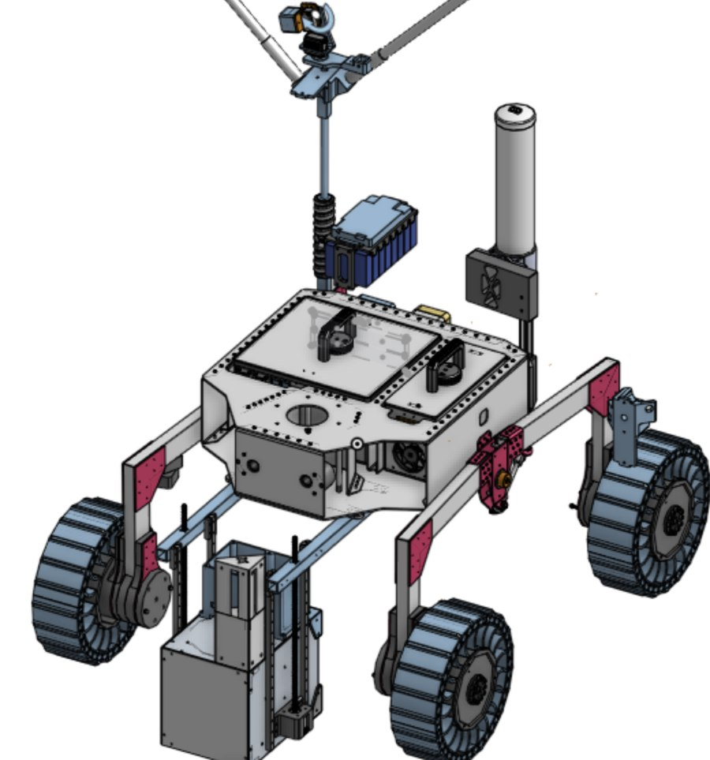
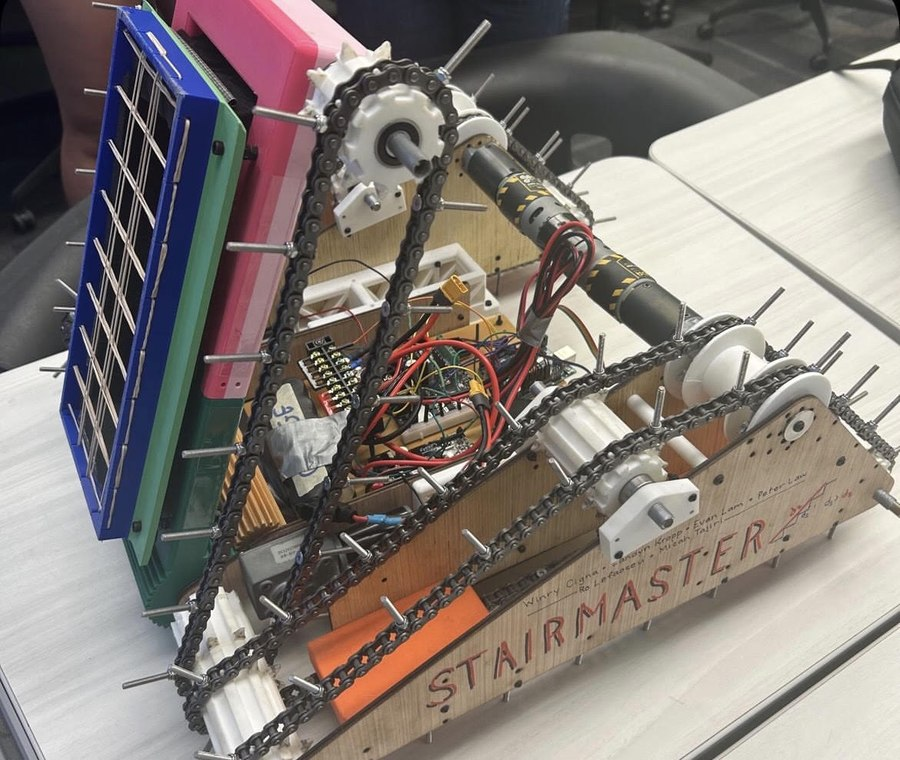

Robotics and manufacturing projects I've been a part of. See Experience below for internships and other roles.

Collaborated in a team with other undergraduate students to design and fabricate a hyper-modular, weather-resistant chassis for a University Rover Challenge entry advised by a NASA JPL researcher. Applied statistical and tolerance analysis to improve fit and manufacturability. Utilized power tools such as water jet, bandsaws, drill presses, and more

Worked in a group to design and build a robot capable of climbing stairs, retrieving an egg, and safely returning it to the starting line — using CAD design, on-campus fabrication tools, and close team coordination. Our group won the competition with a time of 1:50.